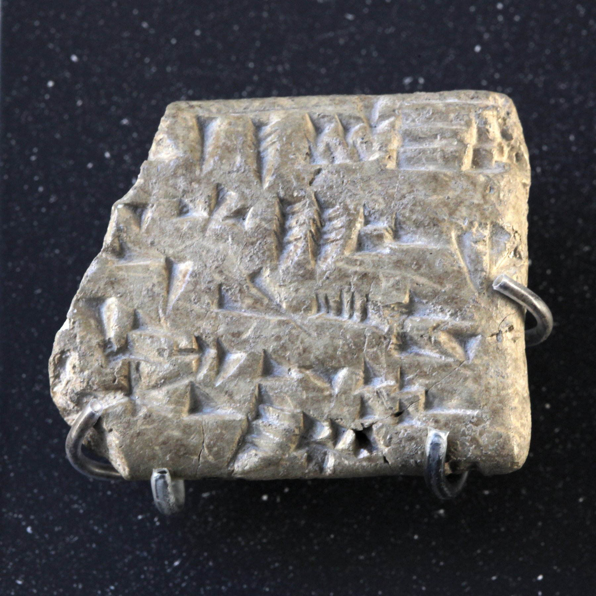

Ugaritic Tablets

- Find Name
- Ugaritic Tablets
- Description
- The Ugaritic tablets are a corpus of about 1,500 cuneiform texts from Ras Shamra (ancient Ugarit) on the Syrian coast, discovered by accident in 1928 and excavated by a French mission under Claude F.-A. Schaeffer from April 1929, with the first tablets found on May 20, 1929. Written in Ugaritic - a Northwest Semitic language closely related to Hebrew - in a 30-letter alphabetic cuneiform script, the texts date mainly to the 14th-12th centuries BC, ending when the city was destroyed about 1190 BC. They include the Baal Cycle, the Legend of Keret, the Tale of Aqhat, cultic and ritual texts, letters, and administrative records, and were deciphered within months by Hans Bauer, Charles Virolleaud, and Paul Dhorme.
- Historical Period
- Late Bronze Age, c. 14th-12th centuries BC
- Evidence Class
- Contextual
- Interpretations
- Ugarit is the single greatest background source for the world of Judges and Kings: its Baal myths explain what Israel's idolatry actually looked like, its poetry shares vocabulary and parallelisms with the Psalms, and its alphabet is the earliest known alphabetic cuneiform, ancestor in form to the Hebrew script. The texts must be used with contrast, not conflation: Ugaritic religion is Canaanite polytheism, and the Baal Cycle is not biblical text - it illuminates what the Bible argues against. Ugarit has been called the greatest literary discovery from antiquity since the deciphering of Egyptian hieroglyphs and Mesopotamian cuneiform.
- Alternative Names
- Ugaritic Texts; Ras Shamra Tablets
- Related Places
- Related Books
- Scripture Illuminated
- Biblical Significance
- Ugarit recovers the lost Canaanite world behind the Old Testament - its gods, its poetry, and its alphabet - making passages about Baal worship and Hebrew poetry far clearer.
- Artifact Date
- c. 1400-1200 BC
- Current Location
- Louvre Museum, Paris; National Museum of Damascus
- Date Discovered
- 1928 (accidental find); excavated from 1929
- Discovery Location
- Ras Shamra (ancient Ugarit), Syria
- Timeline Era
- Conquest and Judges
Awaiting Review Not yet checked against scholarly sources. Treat its claims as provisional until this entry is reviewed. About verification
Sources: https://en.wikipedia.org/wiki/Ugaritic_texts
https://en.wikipedia.org/wiki/Ugaritic_language
https://en.wikipedia.org/wiki/Ugaritic_language
Last reviewed: not yet reviewed